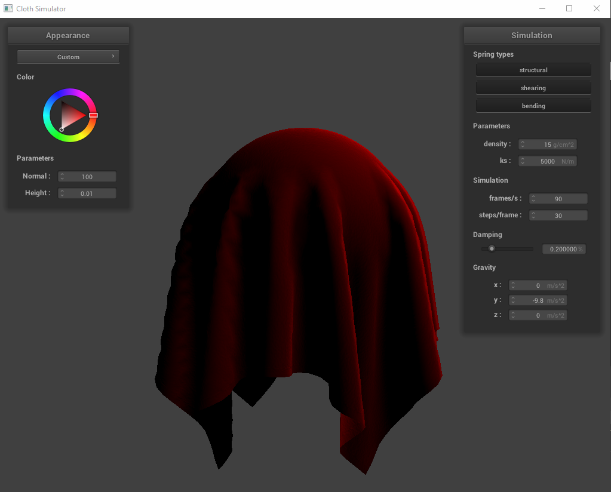
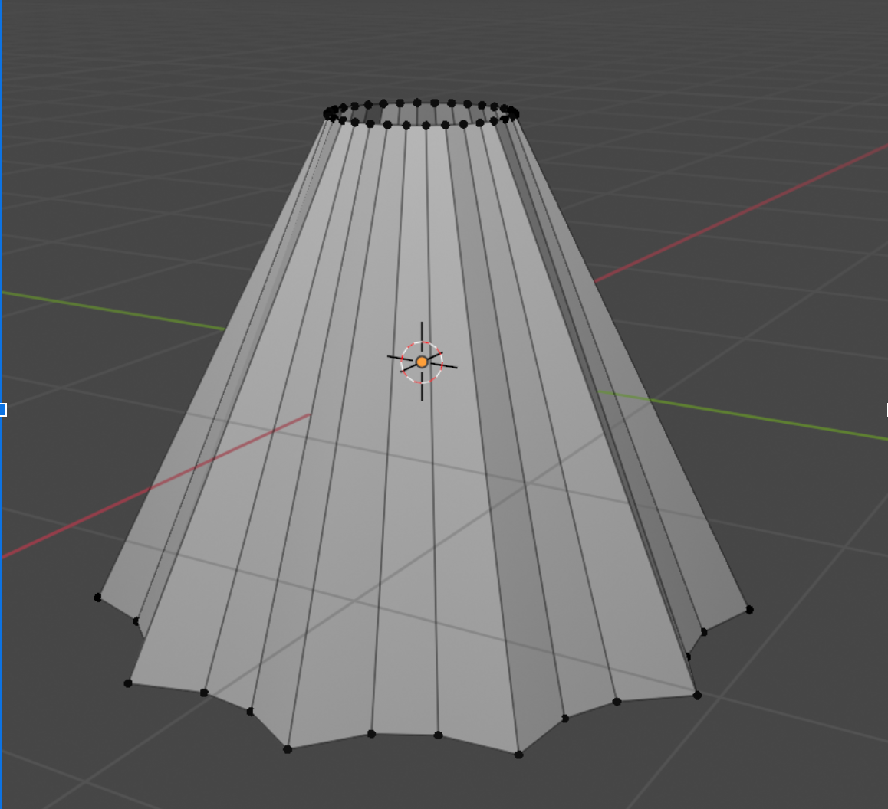

Velevet Skirt Milestone Status Report
Team: Jessica Dong, Kelly Li, Kaiona Martinson, Jennifer Yang
Reflection of Goals and Future Plans
Video
Slides
- Our week two goals were:
- Basic velvet rendering
- Render a skirt shape
- Potentially rendering wind
- A bit behind behind in terms of finalizing each part (velvet, skirt) but we have rendered both successfully
and made progress!
Velvet Updates

- Blinn Phong -
- Coefficient changes
- Diffuse Coefficient changed to red to make the fabric color red
- Ambient Coefficient changed to 0 so that the base color is black
- Specular coefficient changed to a brighter red from white, to look more
like velvet and less like latex
- Increase density in the GUI to 100 (makes the fabric heavier) - 50
- Increase k_s for a tighter spring - 20000
- Bump Mapping - downloaded a photo of velvet texture to mimic the anisotropic nature of velvet without
having to actually render its individual fibers.
- Extra parameters
- We used this article: https://manual.keyshot.com/manual/materials/material-types/advanced-material/velvet/
for a nice baseline on what values to start each parameter with
- Sheen -> This dictated the color of our reflection, which we set to a lighter shade of red to
resemble how velvet looks under brighter conditions
- Roughness -> We set our roughness to be pretty high, since we want the light to be spread evenly
across the velvet
- Backscatter -> backscatter is light that is scattered throughout the whole object. Usually it helps
with providing a soft effect on the object
- Edginess -> edginess is how far the sheen spreads across the surface, we set it pretty high, to show
brighter borders on our surface edges (a more drastic fade)
- unintentionally made satin
Skirt Updates

- Modeled skirt on Blender
- Need to import model and update collision code so it integrates with skirt dimensions
Moving Forward
- Updated Work Plan
- Finalize Both Velvet and Skirts
- Combine both
- Rendering wind and other materials